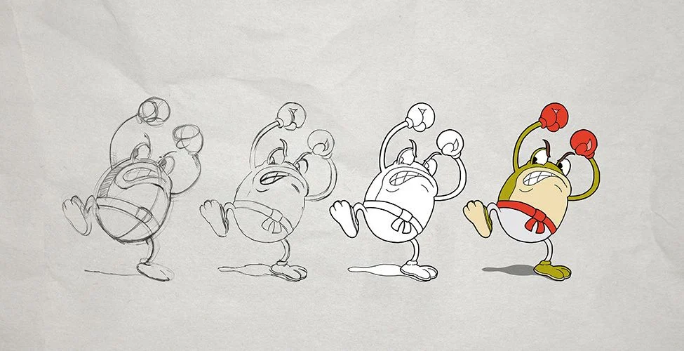

Já que sou um aluno cursando o ensino médio integrado ao técnico de desenvoolvimento de sistemas, como trabalho de conclusão de módulo, foi pedido aos alunos que fizessem um site com tema livre, usando o que nós aprendemos em sala de aula

O site surgiu dessa necessidade de prosseguir com os meus estudos sobre programação e evoluir. Porém com os muitos estudos que eu tive sobre o conteúdo do site, ou seja, o Cuphead, eu vi nele um assunto muito rico para se trabalhar, gerando muitos assuntos e apresentando visões autorais sobre o game
